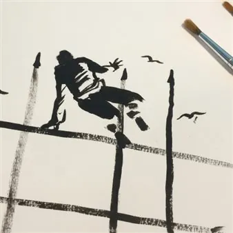

da mer 2 set a dom 6 set
In\Visible Cities 2026
Un’unica manifestazione con 8 appuntamenti raccolti e ordinati nel programma completo.
 Indicazioni
Indicazioni
- Costi e prenotazioni
- Costo non indicato · Prenotazione non indicata
- Programma
- Programma raccolto. Gli appuntamenti delle diverse schede sono riuniti in questa pagina.
- In caso di maltempo
- Nessuna indicazione specifica pubblicata.
- Note
- Le schede dei singoli appuntamenti sono state unite nella manifestazione principale.
L’EVENTO
Descrizione completa
In\Visible Cities è un festival urbano e site specific che si svolge “nelle città visibili” , per lo più a cielo aperto: dalle piazze alle strade pedonali, dai parchi pubblici a quelli privati, dagli edifici dal grande valore storico-artistico alle aree dismesse, con l’obiettivo di valorizzare e far scoprire i territori attraverso esperienze artistiche e performative coinvolgenti. PROGRAMMA
Segni di Resistenza è una mostra di opere artistiche che nasce da un contest creativo dedicato alle arti grafiche e alle opere artistiche in LIS, rivolto a persone Sorde*, udenti e segnanti, per raccontare la resistenza alle oppressioni. Perché riconoscere le ingiustizie e trasformarle in forma artistica è un atto collettivo: significa immaginare nuovi futuri possibili. L’ispirazione per il concorso arriva dallo spettacolo The Beat of Freedom. La Resistenza a fumetti, tratto dal libro Io sono l’ultimo: le lettere di partigiani e partigiane prendono forma sul palco attraverso il disegno dal vivo del fumettista Fabio Babich e la voce dell’attrice Marta Cuscunà, accompagnata dall’interprete LIS Elisa Verrando che le traduce in Lingua dei Segni Italiana.
Da questa performance, nasce l’idea per un concorso creativo che invita a creare opere artistiche attorno al tema della resistenza alle oppressioni, partendo dalla Resistenza al fascismo fino alla resistenza messa in atto dalla comunità Sorda che continua a lottare per il riconoscimento, la valorizzazione e la tutela della propria lingua e cultura. Non solo Resistenza storica, quindi, ma anche la resistenza quotidiana contro le oppressioni: abiliste, sessiste, razziste o ideologiche.
Prenotazioni tramite Whatsapp o SMS al numero +39 328 8535125 indicando: Nome, Cognome, Spettacolo, Numero di biglietti.
In\Visible Cities è un festival urbano e site specific che si svolge “nelle città visibili” , per lo più a cielo aperto: dalle piazze alle strade pedonali, dai parchi pubblici a quelli privati, dagli edifici dal grande valore storico-artistico alle aree dismesse, con l’obiettivo di valorizzare e far scoprire i territori attraverso esperienze artistiche e performative coinvolgenti. PROGRAMMA Segni di Resistenza /Etnorama CasaFestival Da mercoledì 2 a domenica 6 settembre ore 17.00 – 20.00
Not to Scale è un’esperienza performativa immersiva. Ogni coppia di partecipanti, guidata da una traccia audio, intraprende un viaggio comune utilizzando soltanto una matita e alcuni fogli di carta bianca.
Disegnare, cancellare, osservare, indicare, scambiarsi dei fogli: azioni minime che, intrecciandosi con la voce narrante, i suoni e la musica, danno vita a una drammaturgia invisibile in cui i partecipanti diventano al tempo stesso interpreti e spettatori.
Priva di attori e di un pubblico esterno, l’opera si sviluppa interamente nell’immaginazione e nella relazione tra le persone coinvolte, invitando a riflettere sui meccanismi della percezione, della rappresentazione e della costruzione condivisa del significato.
BALLETTI è un progetto di trasmissione fedele delle coreografie dei videoclip musicali degli anni Novanta/Duemila quando pop star come Britney Spears, Backstreet Boys, Spice Girls, Ricky Martin, Janet Jackson hanno combinato la propria musica con la danza costruendo delle performance coreografiche, da soli o con altri ballerini, diventate l’elemento ricorrente dei video e dei live di quegli anni.
Daria Greco ricrea una classe di danza moderna aperta a tutti e tutte, senza limiti di età e senza una preparazione pregressa, in cui tutto corrisponde all’estetica anni Novanta. Una lezione di danza moderna nello spazio pubblico in cui, dopo un breve riscaldamento del corpo, la trasmissione della coreografia avviene attraverso la spiegazione dei passi e l'assimilazione dei conteggi, in maniera frontale e per mezzo della ripetizione.
Mettere al mondo un figlio oggi è un atto di coraggio o di imprudenza?
Dad or Alive esplora il conflitto tra il desiderio di genitorialità e la paura di un futuro incerto: se trasmettere una parte di sé o mettere al mondo un'altra vita in un mondo in crisi.
Attraverso storie, dati e confessioni personali, parole, musica elettronica dal vivo e video mapping, la performance dà voce a coloro che si chiedono se diventare genitori oggi sia ancora un sogno realizzabile o una responsabilità insostenibile.
Eco-ansia, precarietà, desiderio, paura: un'indagine intima e politica rivolta a coloro che si chiedono non solo “voglio un figlio?”, ma soprattutto “in che tipo di mondo vivrà?”.
Il progetto performativo Macelleria Cosmica parte da una riflessione sul corpo umano, che, in quanto materia, è universalmente connesso più di quanto siamo abituati a credere. Il corpo umano è sempre la carne di qualcos'altro: un aggregato di atomi appartenuti ad altri esseri viventi, con un'unica origine: la fusione nucleare nelle stelle. Siamo una «macelleria cosmica», usando le parole di Emanuele Coccia. In scena, una performer dà voce a un monologo in uno spazio sospeso, mentre una camera riprende la sua immagine e la distorce in presa diretta. Un testo proiettato invita lo spettatore a riflettere sul proprio ruolo all'interno dell'ecosistema in cui tutto è costituito dalla stessa materia vibrante.
IL PROGRAMMA
Programma e orari
Le singole date appartengono alla stessa manifestazione. Ogni sede verificata dispone delle proprie indicazioni.
Da Mercoledì 2 settembre a Domenica 6 settembre · In\Visible Cities 2026 - Segni di Resistenza
Gradisca d'Isonzo · CasaFestival - Via Cesare Battisti, 30
- ore 17.00 – 20.00
Da Venerdì 4 settembre a Sabato 5 settembre · In\Visible Cities 2026 - Not to scale - Gradisca d'Isonzo
Gradisca d'Isonzo · Casa Maccari - Via della Campagnola, 18
- ore 16.00, 17.00, 18.00
- Ore 10.30, 11.30, 16.00, 17.00, 18.00
Sabato 5 settembre · In\Visible Cities 2026 -Balletti
Gradisca d'Isonzo · Piazza Unità
- ore 19.00
Sabato 5 settembre · In\Visible Cities 2026 - Dad or Alive
Gradisca d'Isonzo · Corte Marco d’Aviano - Via A. Bergamas, 32
- ore 21.30
Sabato 5 settembre · In\Visible Cities 2026 - Macelleria cosmica
Gradisca d'Isonzo · Sala Bergamas, Via Antonio Bergamas, 3
- ore 18.00
Da Sabato 5 settembre a Domenica 6 settembre · In\Visible Cities 2026 - What Will We Do Without Exile?
Gradisca d'Isonzo · Palazzo del Monte di Pietà - Via Dante Alighieri
- In\Visible Cities è un festival urbano e site specific che si svolge “nelle città visibili” , per lo più a cielo aperto: dalle piazze alle strade pedonali, dai parchi pubblici a quelli privati, dagli edifici dal grande valore storico-artistico alle aree dismesse, con l’obiettivo…
Domenica 6 settembre · In\Visible Cities 2026 - Asteroide
Gradisca d'Isonzo · Teatro Nuovo - Via Marziano Ciotti, 1
- ore 19.00
Domenica 6 settembre · In\Visible Cities 2026 - I offer myself to you
Gradisca d'Isonzo · Corte di Palazzo Torriani - Via A. Bergamas, 32
- ore 18.00
INFORMAZIONI UTILI
Prima di partire
- Controllare la fonte prima di partire.
ORGANIZZAZIONE